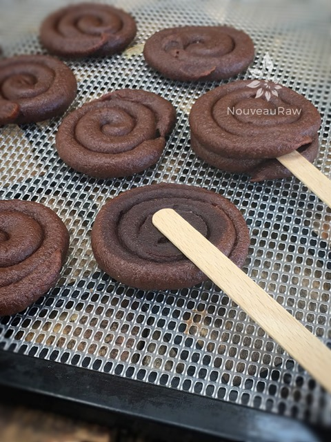
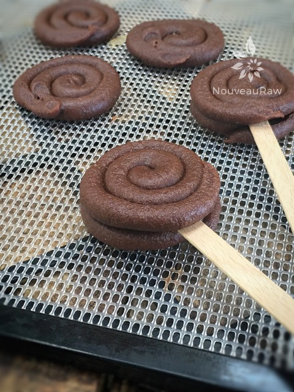
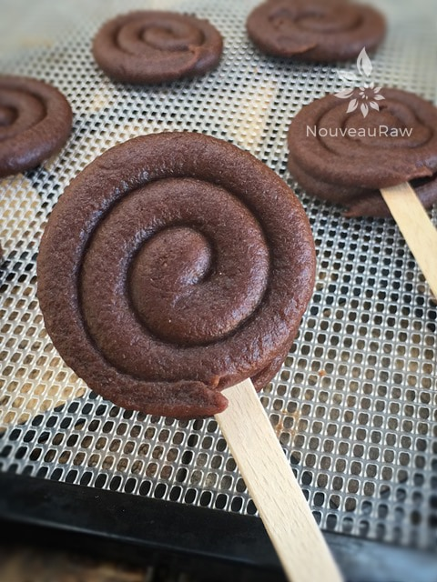
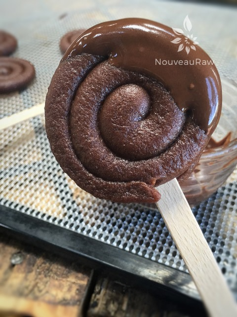

Chocolate Old Fashion “Black Licorice” Sucker Pops

~ raw, vegan, gluten-free, nut-free ~
As you scroll through to the bottom of this recipe, the preparation list may look long and seem complicated. It really isn’t. Let me speak in the third person just for a sec, “Amie Sue don’t do complicated!” lol I just made clear step by step instructions and shared some tips. So, please don’t be intimidated. :)
After making these, I decided to dip them in chocolate, this is purely optional. If you choose to, you could dip half of it, all of it, or even put the chocolate in between the layers.
There are so many ways that you could dress them up or not! I for one enjoy the unadulterated flavor of black licorice. :) I have run this wonderful “candy” past several black licorice lovers, and they gave approving moans and groans. To me, when a treat leaves a person speechless, I know it is a winner.
My dad and mom were shocked to find out that the licorice flavoring ingredient used was fennel! Fresh or dried, fennel is very good for you.
Fennel seeds are a rich source of dietary fiber. Much of this roughage is metabolically inert insoluble fiber, which helps increase the bulk of food by absorbing water throughout the digestive system and easing constipation.
In addition, dietary fibers bind to bile salts (produced from cholesterol in the liver) and decrease its re-absorption in the colon, thus helping lower serum LDL cholesterol levels and eliminate stomach-ache and stimulate digestion. I hope you enjoy this recipe. Please let me know if you try it. Blessings…
 Ingredients:
Ingredients:
Yields 19 suckers
Sucker Ingredients:
- 3 cups Medjool dates, pitted
- 1/4 cup water
- 2 Tbsp ground fennel seeds
Decorating with Chocolate Ingredients:
Preparation:
- Have two dehydrator trays ready, fitted with the teflex sheet. Set aside.
- Remove the pits from the dates as you put them in the measuring cup.
- Be sure to inspect each date as you tear it in half to remove the pit. Mold and insect eggs can infect dried dates. I don’t mean to gross you out, you just need to be made aware of this.
- Place the dates in the food processor fitted with the “S” blade. Add the water and ground fennel. Process until the dates turn into a creamy paste.
- If the dates that you have are really moist, you can start off without the water. It’s better not to have it, but sometimes the dates are too dry to get a smooth paste.
- This will take some patience, and you will need to stop the machine every once in a while to scrape the sides down.
- Once the paste is formed, using a rubber spatula, place the paste in a sturdy piping bag.
- Pipe the date wheels:
- Use a canvas or silicone piping bag for this recipe. You will be using a good amount of hand pressure to squeeze it out, and you don’t want a plastic bag to pop on you.
- When piping, this is a good time to call in your strong partner. Good hand strength is needed.
- Hold the piping bag tip about 1/4″ above the teflex sheet and slowly guide the lines of date paste into a spiral formation. Make it as little or as large as you want the candy piece.
- Keep a constant pressure on the piping bag as you squeeze out the paste. This will ensure an even thickness of the line.
- After each completed candy, stop and retwist the piping bag, working all paste towards the tip. This will eliminate air bubbles in the bag and give you a solid grip.
- Dehydrate at 145 degrees (F) for 1 hour, then reduce to 115 degrees (F) for 8 hours (+/-).
- Check in on them periodically, once they are dry enough you will want to transfer them to a mesh sheet to speed up the drying process. It’s a long one, but well worth it.
- Continue drying for 6-8 hours or until they no longer have any stickiness to them.
- To make the sucker pops sandwich place a popsicle stick in between two wheels. I dipped my finger in water and brushed the inner layers of the wheels, this helped them to stick together.
- Dip all or 1/2 of the pop into chocolate. I took 3 oz Dixie cups and made a little slit in the bottom of it to use it as a stand for the pop while the chocolate was drying.
- Store in an airtight container, single layered with wax paper in between layers or place in small gift bags.
Culinary Explanations:
- Why do I start the dehydrator at 145 degrees (F)? Click (here) to learn the reason behind this.
- When working with fresh ingredients, it is important to taste test as you build a recipe. Learn why (here).
- Don’t own a dehydrator? Learn how to use your oven (here). I do however truly believe that it is a worthwhile investment. Click (here) to learn what I use.

Flip one of the date candies over and lay a popsicle stick on top as shown in the photo.

It is best to wet your finger and swipe it across the back of the other candy before gently pressing them together. This will help them stick to one another.

Looking good so far… but now we need to dip part of them in melted chocolate.

Perfection. Chocolate and black licorice are a perfect combination.
© AmieSue.com